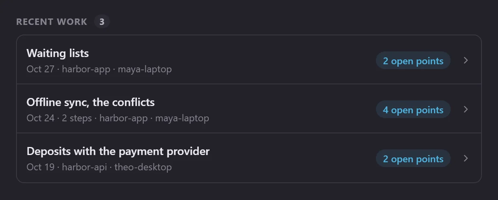
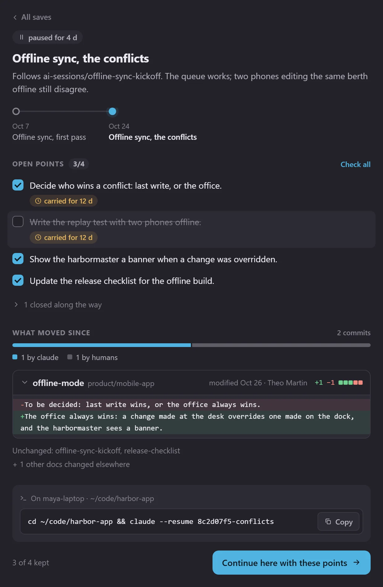
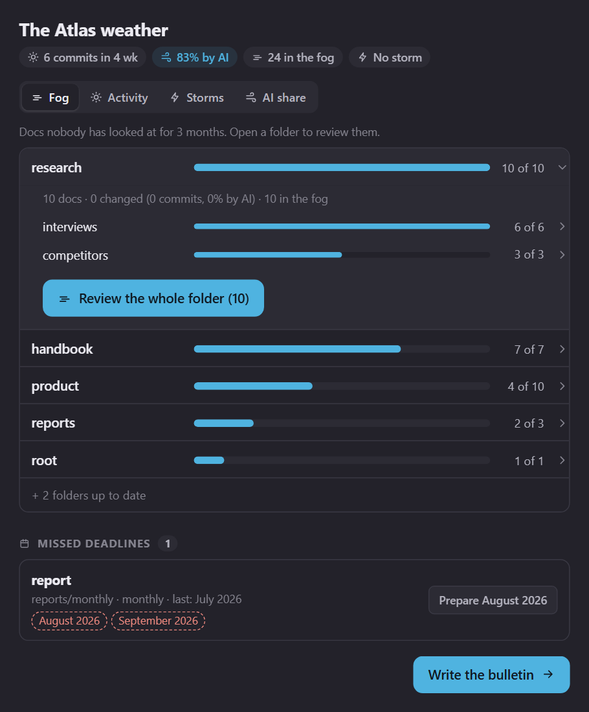
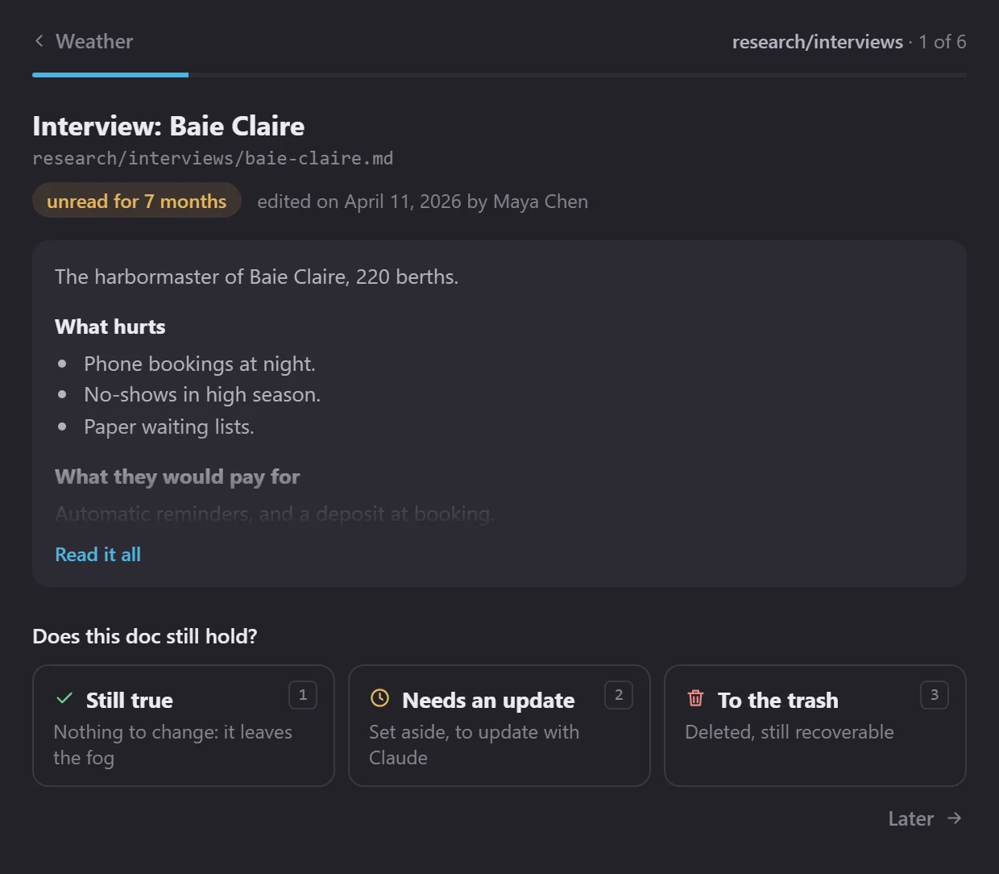
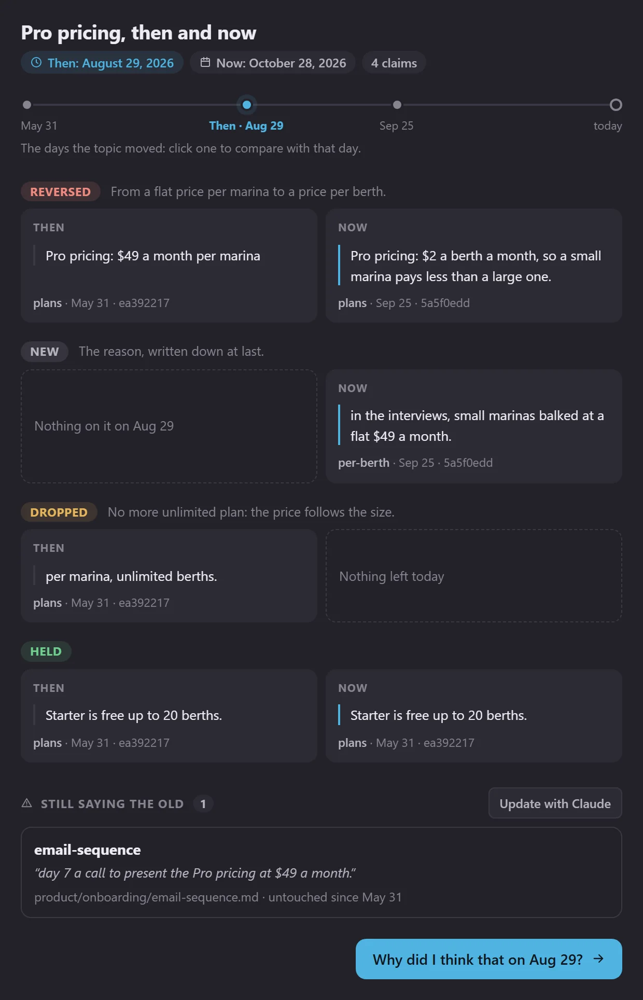
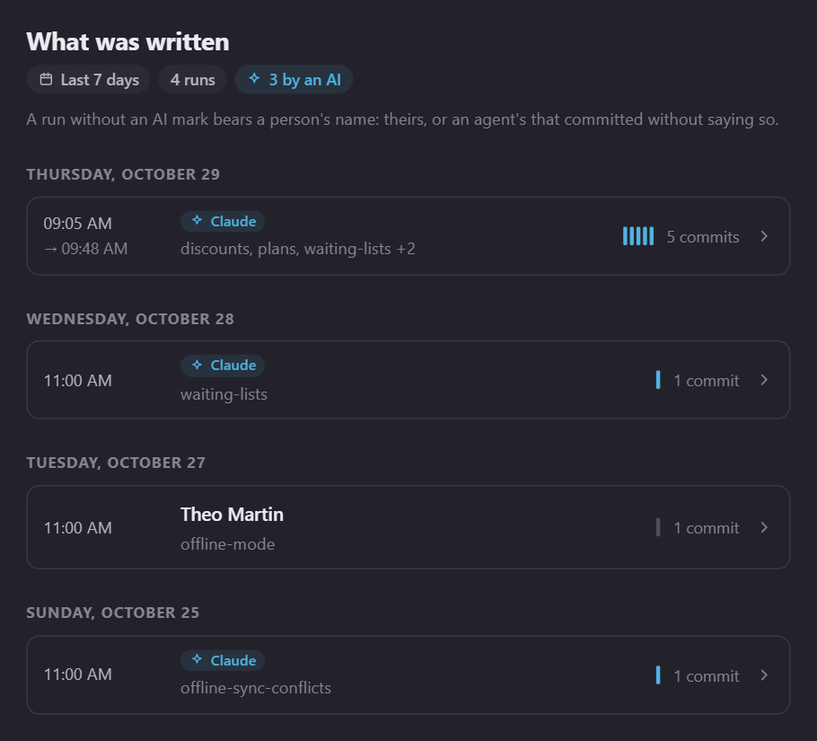
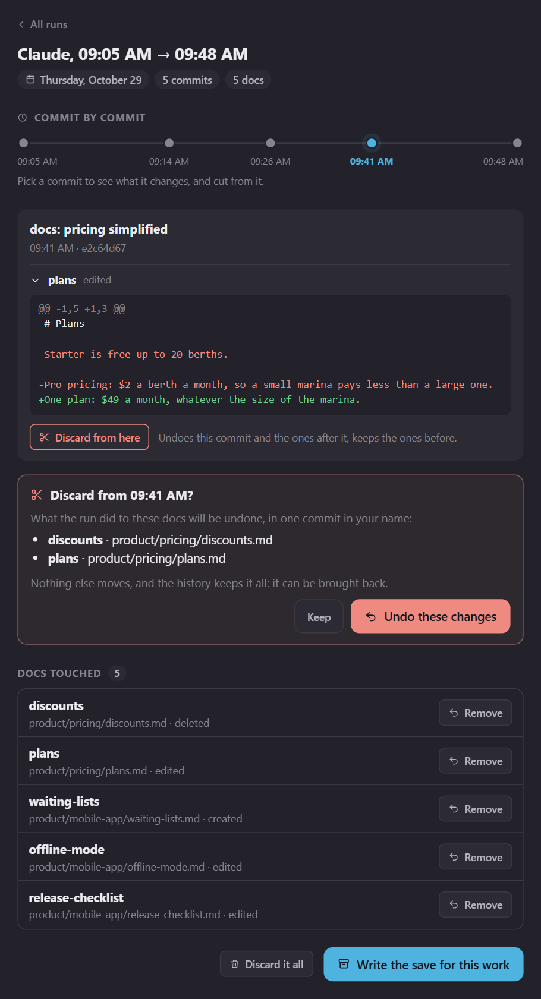

Atlas Mind is a self-hosted, git-native knowledge base where your notes stay plain files in your own private git repository, served by an engine you can read line by line — and an external brain you share with your AI over an open protocol. Own the data. Own the engine. Own the mind.Atlas Mind est une base de connaissances auto-hébergée, bâtie sur git : tes notes restent des fichiers ordinaires dans ton propre dépôt git privé, servies par un moteur que tu peux lire ligne à ligne, et deviennent un cerveau externe que tu partages avec ton IA par un protocole ouvert. Tes données. Ton moteur. Ton esprit.
No account. No upload. The demo is the real viewer, running entirely in your browser.Sans compte, sans envoi : la démo est le vrai viewer, qui tourne entièrement dans ton navigateur.
The Mind — a live, force-directed knowledge graph of your notes.The Mind : la carte vivante de tes notes, un graphe qui s’organise tout seul.
Notion, and every hosted notes app, ask you to pour your thinking into their structure, on their servers, in their format. Leave, and you fight an exporter to get a tangle of files back. Your AI assistant reads your brain only by pulling it into their cloud.Notion, comme toutes les applis de notes hébergées, te demande de verser ta pensée dans leur structure, sur leurs serveurs, dans leur format. Pour partir, il faut batailler avec un export pour récupérer un fouillis de fichiers. Et ton assistant IA ne lit ta tête qu’en l’aspirant dans leur cloud.
Atlas Mind inverts that: a self-hosted Notion alternative, and a way to publish an Obsidian-style vault you actually own. Your files stay on the server you choose, and Atlas hands them to no AI service on its own: an assistant you connect receives only the notes it reads.Atlas Mind fait l’inverse : une alternative à Notion que tu héberges toi-même, et une façon de publier un coffre à la Obsidian qui t’appartient vraiment. Tes fichiers restent sur le serveur que tu choisis, et Atlas ne les confie de lui-même à aucun service d’IA : l’assistant que tu branches ne reçoit que les notes qu’il lit.
Everything ships in the box — a single Python server on the standard library, no database, nothing of yours sent anywhere.Tout est dans la boîte : un seul serveur Python sur la bibliothèque standard, sans base de données, rien de toi envoyé nulle part.
Markdown is first-class — rendered, linked, searched. But Atlas also previews standalone HTML decks, PDFs, Word .docx, images and JSON inline, rendered in your browser. Nothing uploaded anywhere.Le Markdown est chez lui : rendu, relié, cherché. Mais Atlas affiche aussi les présentations HTML, les PDF, les .docx de Word, les images et le JSON, directement dans ton navigateur. Rien n’est envoyé ailleurs.
Atlas is the memory your assistant reads and enriches. It exposes an MCP endpoint with thirty-four tools — read, write, triage, map, rewind and audit your mind — and atlas init scaffolds your conventions, which every assistant receives the moment it connects, and the rituals you write down become commands. Assistants sign in over OAuth: you choose what each may do, and revoke it in a click.Atlas est la mémoire que ton assistant lit et enrichit. Il expose un point d’accès MCP avec trente-quatre outils pour lire, écrire, trier, cartographier, remonter le temps et auditer ton esprit. atlas init pose tes conventions, que chaque assistant reçoit dès qu’il se connecte, et les rituels que tu écris deviennent des commandes. Les assistants se connectent par OAuth : tu choisis ce que chacun peut faire, et tu le retires en un clic.
A self-hosted Markdown wiki with no database: one Python HTTP server plus a build step, entirely on the standard library. Accounts and share links are plain JSON on disk, fonts and libraries vendored, so nothing of yours goes out.Un wiki Markdown auto-hébergé sans base de données : un serveur HTTP Python et une étape de build, entièrement sur la bibliothèque standard. Les comptes et les liens de partage sont du JSON sur le disque, polices et bibliothèques sont embarquées : rien de toi ne sort.
Connect Atlas to Claude (or any MCP client) and your knowledge base stops being a passive archive: it becomes a persistent memory for Claude, an MCP server for your notes it can read, write, triage, map, rewind and audit, on your own machine, with nothing shipped to anyone's cloud. Thirty-four tools, six superpowers.Branche Atlas sur Claude (ou n’importe quel client MCP) et ta base de connaissances cesse d’être une archive passive : elle devient une mémoire durable pour Claude, un serveur MCP pour tes notes qu’il peut lire, écrire, trier, cartographier, remonter dans le temps et auditer, sur ta propre machine, sans rien expédier dans le cloud de personne. Trente-quatre outils, six super-pouvoirs.
Ask in plain language and your AI gets a ready-made brief on the topic — the right sections, within a token budget — finds the exact line that states a fact, and catches up on what changed since it last looked. Every hit says how far to trust it: who edited it last, whether an AI did, whether it went stale or was judged contradicted.Demande en langage courant et ton IA reçoit un dossier tout prêt sur le sujet, les bonnes sections dans un budget de tokens, retrouve la ligne exacte qui énonce un fait, et rattrape ce qui a changé depuis sa dernière visite. Chaque résultat dit jusqu’où s’y fier : qui l’a modifié en dernier, si c’était une IA, s’il a vieilli ou s’il a été jugé contredit.
briefsearch_docsgrep_docsread_doclist_treerecent_docschanges_sinceresume_sessionIt doesn't just answer — it files. Capture a decision, rewrite a section surgically, rename or refile a note with every [[backlink]] fixed automatically, archive what's stale (soft-deleted to trash, never erased). Every edit comes back as a diff, can be rehearsed first, and is refused if you changed the note since the AI read it. Your rituals travel too: a weekly review, a session save, a decision from your template — each one a command every assistant offers, written once as a note in your mind.Il ne se contente pas de répondre : il range. Noter une décision, réécrire une section avec précision, renommer ou déplacer une note en réparant chaque [[lien entrant]], archiver ce qui a vieilli (mis à la corbeille, jamais effacé). Chaque modification revient sous forme de diff, peut être essayée d’abord, et est refusée si tu as changé la note depuis que l’IA l’a lue. Tes rituels voyagent aussi : une revue hebdomadaire, une sauvegarde de session, une décision tirée de ton modèle, chacun devient une commande que tout assistant propose, écrite une seule fois comme une note de ton esprit.
create_docedit_docmove_docdelete_docYour AI traverses the wikilink graph the way you do: forward links, backlinks, a bird's-eye map of hubs and orphans, every note under a tag. It reasons about your mind's shape, not just its words.Ton IA parcourt le graphe des liens comme toi : liens sortants, liens entrants, une vue d’ensemble des carrefours et des notes isolées, toutes les notes d’une étiquette. Elle raisonne sur la forme de ton esprit, pas seulement sur ses mots.
get_linksget_backlinksget_mind_topologylist_by_tag“When did we decide this — and what was it before?” Your AI reads any past version of a note, diffs two points in time, finds a sentence you deleted months ago, traces a line back to the commit that wrote it, sets what you thought then beside what you think now, claim by claim, follows a moving changelog, and restores a version in one move — powered by the git history your mind already carries.« Quand a-t-on décidé ça, et c’était quoi avant ? » Ton IA lit n’importe quelle version passée d’une note, compare deux moments, retrouve une phrase effacée il y a des mois, remonte une ligne jusqu’au commit qui l’a écrite, met ce que tu pensais alors à côté de ce que tu penses aujourd’hui, affirmation par affirmation, suit un journal des changements et restaure une version d’un geste, grâce à l’historique git que ton esprit porte déjà.
doc_historydoc_atdoc_diffsearch_historythen_and_nowshow_shiftchangelogdoc_blamedoc_revertEvery change is attributed in the git history — who wrote it, when, and whether an AI made the edit. Your assistant reads the activity stream, draws the mind's weather folder by folder, surfaces stale notes untouched for months and records the ones that still hold, and flags same-topic documents that may now contradict each other — then reviews them for you. And when an agent's session went wrong, it undoes the run in one commit: all of it, everything after a given point, or only the documents you name.Chaque changement est attribué dans l’historique git : qui l’a écrit, quand, et si c’est une IA. Ton assistant lit le fil d’activité, dresse la météo de ton esprit dossier par dossier, fait remonter les notes oubliées depuis des mois et retient celles qui tiennent toujours, signale les documents d’un même sujet qui pourraient se contredire, puis les relit pour toi. Et quand la session d’un agent a mal tourné, il annule le passage en un commit : en entier, à partir d’un point donné, ou seulement les documents que tu nommes.
activityagent_runsundo_runmind_weatherstaleconfirm_doccontradictionsjudge_contradictionPoint your agents at the firehose: mail, alerts, a competitor's move, a CI webhook. They pre-sort it, and each item lands as a ready-to-file card in your own inbox, with a suggested folder, tags and the note it echoes. Keep, trash or snooze in a keystroke; Keep files it into your mind.Branche tes agents sur le flot : mails, alertes, le mouvement d’un concurrent, un webhook de CI. Ils le pré-trient, et chaque élément arrive dans ta propre inbox sous forme de carte prête à ranger, avec un dossier suggéré, des étiquettes et la note qu’il rappelle. Garder, jeter ou reporter d’une touche ; Garder le range dans ton esprit.
create_inbox_itemEvery tool runs on your Atlas and respects the same boundaries as the viewer — shared mirrors stay read-only, deletes are reversible, a token can be limited to reading or the inbox, and your assistant receives only what it reads. Your assistant gets a memory; you keep the keys.Chaque outil tourne sur ton Atlas et respecte les mêmes limites que le viewer : les miroirs partagés restent en lecture seule, les suppressions sont réversibles, un jeton peut être limité à la lecture ou à l’inbox, et ton assistant ne reçoit que ce qu’il lit. Ton assistant gagne une mémoire ; tu gardes les clés.
Some questions are better answered with something to click. In a host that renders MCP Apps, Atlas answers them with a small interactive view, right in the chat: you tick, open and decide, and your assistant is told what you chose.Certaines questions se répondent mieux avec quelque chose à cliquer. Dans un client qui affiche les MCP Apps, Atlas y répond par une petite vue interactive, au cœur de la conversation : tu coches, tu ouvres, tu décides, et ton assistant apprend ce que tu as choisi.
Your recent work, one line per piece of it, whatever machine it ran on. Open one and the save is laid out: the open points to tick, with how long each has been carried, what moved since in the docs it links to, diffs included, and the command that resumes the session where it ran. Continue here hands the points you kept to the conversation.Ton travail récent, une ligne par chantier, quelle que soit la machine. Ouvres-en un et la sauvegarde se déplie : les points ouverts à cocher, avec depuis combien de temps chacun traîne, ce qui a bougé depuis dans les documents liés, diffs compris, et la commande qui reprend la session là où elle tournait. Continuer ici passe à la conversation les points que tu as gardés.
resume_session

Your folders ranked by what nobody has looked at for months, by activity, by contradictions or by how much an AI wrote. Open a folder and review its forgotten docs one by one: still true, needs an update, or to the trash, each verdict recorded in your name, the confirmed ones left alone for longer each time. The periodic reports gone missing are listed too, one click from being prepared.Tes dossiers classés par ce que personne n’a regardé depuis des mois, par activité, par contradictions ou par la part écrite par une IA. Ouvre un dossier et passe ses documents oubliés un par un : toujours vrai, à mettre à jour ou à la corbeille, chaque verdict enregistré à ton nom, les documents confirmés laissés tranquilles un peu plus longtemps à chaque fois. Les rapports périodiques manquants sont listés aussi, à un clic d’être préparés.
mind_weatherstaleconfirm_doc

Atlas reads your mind as it was that day and as it is now, your assistant pairs the claims, and every quote is checked word for word against the version it comes from before it is shown: reversed, refined, held, dropped or new, with the days the topic moved and the docs still saying the old. Why did I think that then? asks for your reasoning back then, from what the mind said on that date only.Atlas lit ton esprit tel qu’il était ce jour-là et tel qu’il est aujourd’hui, ton assistant met les affirmations en regard, et chaque citation est vérifiée mot pour mot dans la version d’où elle vient avant d’être montrée : inversée, affinée, maintenue, abandonnée ou nouvelle, avec les jours où le sujet a bougé et les documents qui disent encore l’ancien. Pourquoi je pensais ça à l’époque ? retrouve ton raisonnement d’alors, à partir de ce que l’esprit disait à cette date seulement.
then_and_nowshow_shift
Everything written lately, in runs: what one writer did in one go, an AI or a person, even an agent that never said it was one. Open a run and play it back commit by commit, each with its diff. Discard from here keeps what came before and undoes the rest; Remove undoes a single doc. Each cut is shown before it is made, then made in one commit in your name, and nothing is lost: the history keeps it all.Tout ce qui a été écrit récemment, par passages : ce qu’un même auteur a fait d’une traite, une IA ou une personne, même un agent qui ne l’a jamais dit. Ouvre un passage et rejoue-le commit par commit, chacun avec son diff. Annuler à partir d’ici garde ce qui précède et défait le reste ; Retirer défait un seul document. Chaque coupe est montrée avant d’être faite, puis faite en un commit à ton nom, et rien n’est perdu : l’historique garde tout.
agent_runsundo_run

The views open in Claude on the web and desktop, ChatGPT and VS Code with Copilot. Anywhere else, Claude Code included, the same tools answer in text: nothing is lost, it is just less to click.Les vues s’ouvrent dans Claude sur le web et sur ordinateur, dans ChatGPT et dans VS Code avec Copilot. Ailleurs, Claude Code compris, les mêmes outils répondent en texte : rien ne se perd, il y a juste moins à cliquer.
Every change is a git commit, so the home page opens on a living record of how your knowledge grew — and who grew it. Each edit is attributed: its author, its date, and whether an AI made it.Chaque changement est un commit git : l’accueil s’ouvre donc sur le récit vivant de la façon dont tes connaissances ont grandi, et de qui les a fait grandir. Chaque modification est attribuée : son auteur, sa date, et si une IA l’a faite.
A day-by-day feed of who changed what, with a badge on AI-authored edits. Click any entry to peek that document's history without leaving the page, or undo the run it belongs to, whole or for the docs you pick. A "this week" digest sums up the pulse.Le fil, jour après jour, de qui a changé quoi, avec un badge sur les modifications écrites par une IA. Clique une entrée pour voir l’historique du document sans quitter la page, ou annule le passage auquel elle appartient, en entier ou pour les documents choisis. Un résumé « cette semaine » donne le pouls.
The people behind your mind drawn as a small constellation — a glanceable picture of who has been active lately, each star a contributor.Les personnes derrière ton esprit, dessinées en petite constellation : d’un coup d’œil, qui a été actif récemment, chaque étoile un contributeur.
Two maintenance lenses: obsolescence — documents untouched for months — and contradictions — same-topic notes that may now disagree. A shortlist your AI can open and review.Deux regards d’entretien : l’obsolescence, les documents intouchés depuis des mois, et les contradictions, les notes d’un même sujet qui pourraient ne plus être d’accord. Une courte liste que ton IA peut ouvrir et relire.
If Atlas Mind disappeared tomorrow, your mind would still open in any text editor.Si Atlas Mind disparaissait demain, ton esprit s’ouvrirait encore dans n’importe quel éditeur de texte.
It's just a folder of files in your own private git repository. You are never holding someone else's format hostage.Ce n’est qu’un dossier de fichiers dans ton propre dépôt git privé. Aucun format venu d’ailleurs ne te tient en otage.
Point the engine at a mind and it serves a fast single-page app. Upgrading the engine never touches your content; syncing content never touches the engine.Pointe le moteur sur un Atlas et il sert une application rapide d’une seule page. Mettre le moteur à jour ne touche jamais ton contenu ; synchroniser ton contenu ne touche jamais le moteur.
This repository: the Python server, the build step, and the single-page viewer. Read it line by line. Replace it. Your notes don't care.Ce dépôt : le serveur Python, l’étape de build et le viewer. Lis-le ligne à ligne. Remplace-le. Tes notes s’en moquent.
Your notes, in their own private git repository: a content/ folder plus a small atlas.toml. State lives in a local .atlas/ — plain JSON, no database.Tes notes, dans leur propre dépôt git privé : un dossier content/ et un petit atlas.toml. L’état vit dans un .atlas/ local : du JSON, sans base de données.
A wikilink [[graph]], full-text search, backlinks, tags, and a force-directed mind palace — everything a Zettelkasten, digital garden or PKM needs, built from your files.Un [[graphe]] de liens, la recherche plein texte, les liens entrants, les étiquettes et un palais mental qui s’organise tout seul : tout ce qu’il faut à un Zettelkasten, un jardin numérique ou un PKM, bâti à partir de tes fichiers.
Two Atlas instances can share a slice of their content and form a Hive Mind — a personal memory with sharing, not a real-time collaborative editor. It's pull-asymmetric: only the publisher needs to be reachable, the subscriber just pulls.Deux instances Atlas peuvent partager une part de leur contenu et former une Hive Mind : une mémoire personnelle qui se partage, pas un éditeur collaboratif en temps réel. C’est asymétrique : seul celui qui publie doit être joignable, l’abonné ne fait que récupérer.
Pick a folder or a single document and publish it. You get a one-time atlas-node:… link carrying the origin URL and a read-only token (stored hashed, re-issue to rotate).Choisis un dossier ou un seul document et publie-le. Tu obtiens un lien atlas-node:…, affiché une fois, qui porte l’adresse d’origine et un jeton en lecture seule (gardé haché, à réémettre pour le changer).
Paste the link on another instance. Atlas downloads the documents and keeps a read-only mirror under remotes/, re-syncing by SHA-256 diff on every pull.Colle le lien sur une autre instance. Atlas télécharge les documents et garde un miroir en lecture seule sous remotes/, resynchronisé par différence SHA-256 à chaque récupération.
Mirrored docs appear in the tree and as their own teal regions in The Mind. “Appropriate” forks an editable copy — and your AI reads them like any other note.Les documents miroirs apparaissent dans l’arbre et comme régions turquoise dans The Mind. « S’approprier » en fait une copie modifiable, et ton IA les lit comme n’importe quelle note.
Tokens are scoped to the published path and revocable at any time. Nothing on your side is ever overwritten without a sync you control.Les jetons sont limités au chemin publié et révocables à tout moment. Rien chez toi n’est jamais écrasé sans une synchro que tu contrôles.
Free and with no terminal on alwaysdata, or from your terminal on your own servers.Gratuit et sans terminal sur alwaysdata, ou depuis ton terminal sur tes propres serveurs.